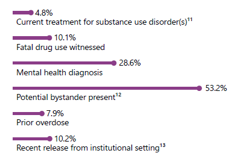
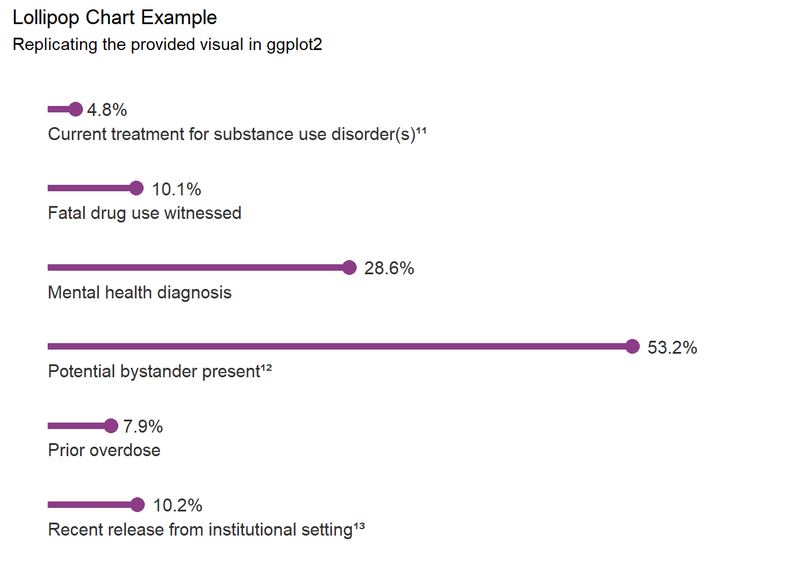
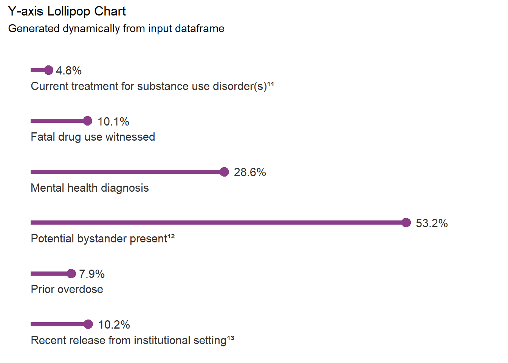

Recreating a Y-axis lollipop chart from a report on SUDORS data
Starting example
This notebook contains a best approximation for the following example chart using ggplot2.

Load required packages
Show Setup
# Restore from renv lockfile with sink to avoid annoying unsuppressable messages# Like 'The library is already synchronized with the lockfile.'# use dev/null for linuxsink("NUL")renv::restore()sink()# Load librariessuppressPackageStartupMessages({library(ggplot2)library(dplyr)})
Simulate data
Our data needs to contain at least two columns:
A column of text values for the labels
A column of data values (i.e. percents).
Show data simulation code
# Simple simulated dataframe with labels and values columnsdata <-data.frame(Category =c("Current treatment for substance use disorder(s)¹¹","Fatal drug use witnessed","Mental health diagnosis","Potential bystander present¹²","Prior overdose","Recent release from institutional setting¹³"),Percentage =c(4.8, 10.1, 28.6, 53.2, 7.9, 10.2))
Data, Chart, and Labels Preparation
Some slight modifications were necessary to position elements and labels for mathcing the original chart.
Show transformations code
# Sort data to match order of example chartdata <- data %>%arrange(desc(Category)) %>%# Reverse alphabetical ordermutate(Y_Pos =row_number() -0.3) # Adjust label positions slightly downward# Define x-axis limits with buffer space for labelsx_max <-max(data$Percentage) +10# Add buffer space# Recreate shorter segments by dynamically adjusting x start pointmin_x_start <-min(data[["Percentage"]], na.rm =TRUE) *0.5# Dynamic start position
Chart Recreation
Show final lollipop chart code
# Final y-axis lollipop chart codeggplot(data, aes(x = Percentage, y =reorder(Category, desc(Category)))) +# Thicker tha default lollipop segment lines starting from a fixed x-locationgeom_segment(aes(x = min_x_start, xend = Percentage, yend = Category), color ="#8b3d88", linewidth =2) +# Lollipop pointsgeom_point(color ="#8b3d88", size =4) +# Percentage labels to the right of pointsgeom_text(aes(label =paste0(Percentage, "%")), hjust =-0.3, color ="gray20", size =4) +# Category labels positioned BELOW each line, aligned with segment startgeom_text(aes(x = min_x_start, y = Y_Pos, label = Category), hjust =0, color ="gray20", size =4) +# Theme modificationstheme_minimal() +labs(x =NULL, y =NULL, title ="Lollipop Chart Example",subtitle ="Replicating the provided visual in ggplot2") +xlim(min_x_start, x_max) +# Ensure enough space for labels and a clean cutofftheme(axis.text.y =element_blank(), # Remove default y-axis labelsaxis.text.x =element_blank(), axis.ticks.x =element_blank(), panel.grid.major.x =element_blank(), # Remove x-axis gridlinespanel.grid.major.y =element_blank(), # Remove y-axis gridlinespanel.grid.minor =element_blank() )

Functionizing our ggplot2 code for reuse
Show lollipop chart function
# Required packages# library(ggplot2)# library(dplyr)create_y_lollipop <-function(df, percentage_col, label_col, title ="Y-axis Lollipop Chart", subtitle ="Generated dynamically from input dataframe") {# Ensure columns existif (!(percentage_col %in%names(df)) |!(label_col %in%names(df))) {stop("Specified columns not found in dataframe.") }# Prepare data: Sort labels in reverse alphabetical order df <- df %>%arrange(desc(.data[[label_col]])) %>%mutate(Y_Pos =row_number() -0.3)# Define x-axis max limit for buffer x_max <-max(df[[percentage_col]], na.rm =TRUE) +10# Dynamic start position min_x_start <-min(df[[percentage_col]], na.rm =TRUE) *0.5# Create lollipop chartggplot(df, aes(x = .data[[percentage_col]], y =reorder(.data[[label_col]], desc(.data[[label_col]])))) +geom_segment(aes(x = min_x_start, xend = .data[[percentage_col]], yend = .data[[label_col]]), color ="#8b3d88", linewidth =2) +geom_point(color ="#8b3d88", size =4) +geom_text(aes(label =paste0(.data[[percentage_col]], "%")), hjust =-0.3, color ="gray20", size =4) +geom_text(aes(x = min_x_start, y = Y_Pos, label = .data[[label_col]]), hjust =0, color ="gray20", size =4) +theme_minimal() +labs(x =NULL, y =NULL, title = title,subtitle = subtitle) +xlim(min_x_start, x_max) +theme(axis.text.y =element_blank(),axis.text.x =element_blank(),axis.ticks.x =element_blank(),panel.grid.major.x =element_blank(),panel.grid.major.y =element_blank(),panel.grid.minor =element_blank() )}
This functionized ggplot2 code should produce the same output as above but with a reusable set of input parameters.
# Call the function with the datasetcreate_y_lollipop(data, percentage_col ="Percentage", label_col ="Category")

Source Code
# Recreating a Y-axis lollipop chart from a report on SUDORS data## Starting exampleThis notebook contains a best approximation for the following example chart using `ggplot2`.<p align="left"> <img src="../images/Lollipop-example.png" alt="Example y-axis lollipop chart"></p>### Load required packages```{r}#| Label: setup#| code-summary: Show Setup# Restore from renv lockfile with sink to avoid annoying unsuppressable messages# Like 'The library is already synchronized with the lockfile.'# use dev/null for linuxsink("NUL")renv::restore()sink()# Load librariessuppressPackageStartupMessages({library(ggplot2)library(dplyr)})```### Simulate dataOur data needs to contain at least two columns:1. A column of text values for the labels2. A column of data values (i.e. percents).```{r}#| Label: Simulate Data#| code-summary: Show data simulation code# Simple simulated dataframe with labels and values columnsdata <-data.frame(Category =c("Current treatment for substance use disorder(s)¹¹","Fatal drug use witnessed","Mental health diagnosis","Potential bystander present¹²","Prior overdose","Recent release from institutional setting¹³"),Percentage =c(4.8, 10.1, 28.6, 53.2, 7.9, 10.2))```## Data, Chart, and Labels PreparationSome slight modifications were necessary to position elements and labels for mathcing the original chart.```{r}#| Label: Data transformations and chart modification prep#| code-summary: Show transformations code# Sort data to match order of example chartdata <- data %>%arrange(desc(Category)) %>%# Reverse alphabetical ordermutate(Y_Pos =row_number() -0.3) # Adjust label positions slightly downward# Define x-axis limits with buffer space for labelsx_max <-max(data$Percentage) +10# Add buffer space# Recreate shorter segments by dynamically adjusting x start pointmin_x_start <-min(data[["Percentage"]], na.rm =TRUE) *0.5# Dynamic start position```## Chart Recreation```{r}#| Label: Final recreated y-axis lollipop chart#| code-summary: Show final lollipop chart code# Final y-axis lollipop chart codeggplot(data, aes(x = Percentage, y =reorder(Category, desc(Category)))) +# Thicker tha default lollipop segment lines starting from a fixed x-locationgeom_segment(aes(x = min_x_start, xend = Percentage, yend = Category), color ="#8b3d88", linewidth =2) +# Lollipop pointsgeom_point(color ="#8b3d88", size =4) +# Percentage labels to the right of pointsgeom_text(aes(label =paste0(Percentage, "%")), hjust =-0.3, color ="gray20", size =4) +# Category labels positioned BELOW each line, aligned with segment startgeom_text(aes(x = min_x_start, y = Y_Pos, label = Category), hjust =0, color ="gray20", size =4) +# Theme modificationstheme_minimal() +labs(x =NULL, y =NULL, title ="Lollipop Chart Example",subtitle ="Replicating the provided visual in ggplot2") +xlim(min_x_start, x_max) +# Ensure enough space for labels and a clean cutofftheme(axis.text.y =element_blank(), # Remove default y-axis labelsaxis.text.x =element_blank(), axis.ticks.x =element_blank(), panel.grid.major.x =element_blank(), # Remove x-axis gridlinespanel.grid.major.y =element_blank(), # Remove y-axis gridlinespanel.grid.minor =element_blank() )```## Functionizing our `ggplot2` code for reuse```{r}#| Label: Functionized chart code#| code-summary: Show lollipop chart function# Required packages# library(ggplot2)# library(dplyr)create_y_lollipop <-function(df, percentage_col, label_col, title ="Y-axis Lollipop Chart", subtitle ="Generated dynamically from input dataframe") {# Ensure columns existif (!(percentage_col %in%names(df)) |!(label_col %in%names(df))) {stop("Specified columns not found in dataframe.") }# Prepare data: Sort labels in reverse alphabetical order df <- df %>%arrange(desc(.data[[label_col]])) %>%mutate(Y_Pos =row_number() -0.3)# Define x-axis max limit for buffer x_max <-max(df[[percentage_col]], na.rm =TRUE) +10# Dynamic start position min_x_start <-min(df[[percentage_col]], na.rm =TRUE) *0.5# Create lollipop chartggplot(df, aes(x = .data[[percentage_col]], y =reorder(.data[[label_col]], desc(.data[[label_col]])))) +geom_segment(aes(x = min_x_start, xend = .data[[percentage_col]], yend = .data[[label_col]]), color ="#8b3d88", linewidth =2) +geom_point(color ="#8b3d88", size =4) +geom_text(aes(label =paste0(.data[[percentage_col]], "%")), hjust =-0.3, color ="gray20", size =4) +geom_text(aes(x = min_x_start, y = Y_Pos, label = .data[[label_col]]), hjust =0, color ="gray20", size =4) +theme_minimal() +labs(x =NULL, y =NULL, title = title,subtitle = subtitle) +xlim(min_x_start, x_max) +theme(axis.text.y =element_blank(),axis.text.x =element_blank(),axis.ticks.x =element_blank(),panel.grid.major.x =element_blank(),panel.grid.major.y =element_blank(),panel.grid.minor =element_blank() )}```This functionized `ggplot2` code should produce the same output as above but with a reusable set of input parameters.```{r}#| code-fold: false# Call the function with the datasetcreate_y_lollipop(data, percentage_col ="Percentage", label_col ="Category")```